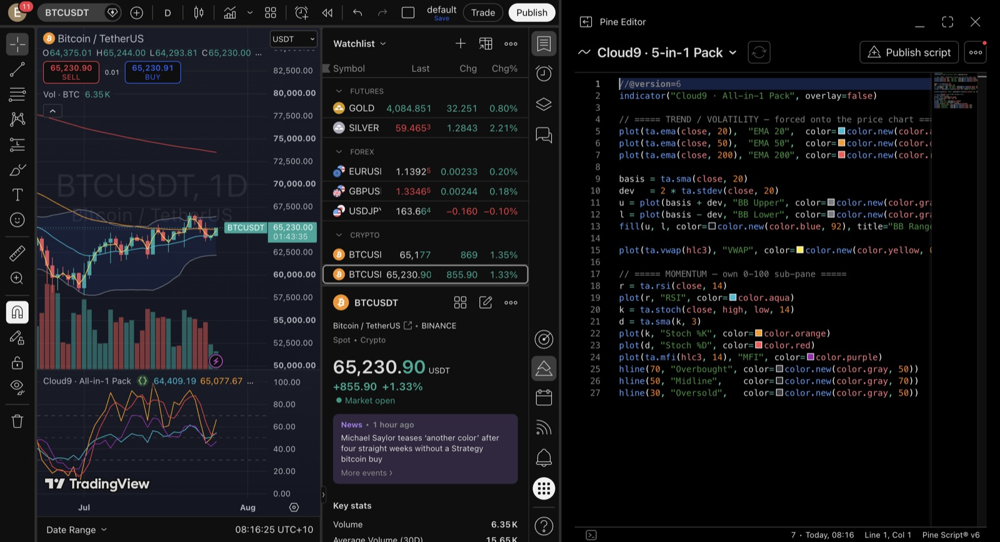

TradingView's free/Basic plan caps you at 2 indicators per chart. But 1 Pine script = 1 slot — no matter how much it plots. So have Claude Code write a single script that stacks your EMAs, Bollinger Bands, VWAP, RSI, Stochastic and MFI into one indicator. Same chart, same free plan, none of the limit.
📉 EMA 20/50/200🎚️ Bollinger📊 VWAP🌀 RSI⚡ Stochastic💧 MFI= 1 slot
Why it works
TradingView counts scripts, not plots. A single indicator() can draw a dozen lines and still costs you exactly one of your two slots. Overlay studies (moving averages, bands, VWAP) sit on the price. Oscillators (RSI, Stoch, MFI) live in a separate 0–100 pane. The trick that lets them share one script is Pine v6's force_overlay=true.
EMA·BB·VWAP → on price＋RSI·Stoch·MFI → 0–100 pane＝1 study
Do it in one prompt
🧩 “Combine all my indicators into one Pine script”
With the bridge connected (see prerequisite below), just ask. Claude writes the Pine v6, compiles it in the editor, and adds it to the chart — both panes appear from the one script.
Write ONE Pine v6 indicator that packs EMA 20/50/200, Bollinger Bands and VWAP onto the price chart using force_overlay, plus RSI, Stochastic and MFI in a 0–100 sub-pane. Compile it and add it to my BTC chart.

One study — “All-in-1 Pack”: EMAs + Bollinger + VWAP on price, RSI/Stoch/MFI in their own pane. 8 indicators, 1 slot.
The one gotcha:overlay=false gives the oscillators their own pane; force_overlay=true pushes the trend plots back onto price. fill() doesn't take that argument — but since it fills between two already-forced plots, it renders on the price chart anyway.
Sample run — Bitcoin
You
Draw the Bitcoin daily and give me a clean trend + volatility overlay — EMA 20/50/200, Bollinger Bands and VWAP — as one Pine script so it only uses a single indicator slot. Add it to the chart.
Claude
On it — one overlay indicator, five plots, one slot. Here's the Pine v6 I compiled and applied to BTCUSDT:
✓ Compiled · 0 errors · added to chart as “Cloud9 · 5-in-1 Pack”
Read: price is holding above the EMA 20/50 with the 200 far overhead — short-term bid, longer-term still heavy. VWAP marks the fair-value line intraday; the Bollinger width shows whether it's coiling or expanding. Want me to add the momentum pane (RSI/Stoch/MFI) as a second script, or fold it into this one?
Fold it in and you get the All-in-1 Pack above — all eight indicators, still one slot. Two separate packs = two slots (your whole free allowance), which is where the save-first note below applies.
⚠︎ Good to know — MCP limitation
Combining beats stacking
The clean move is one combined script like above. If you instead try to add a second, separate indicator script through the bridge, the “new script” tool can leave the editor still bound to your previous script — and TradingView will pop “Save this script before adding?” before it lets the new one onto the chart.
So when you go for two independent scripts, save the second one manually (⌘S / the Save button) before adding it. Packing everything into a single script sidesteps this entirely — and keeps your other free slot open.
Prerequisite — do this first
Connect Claude Code to TradingView Desktop
This whole workflow runs on the free, local Claude × TradingView bridge — no API key, nothing leaves your machine. If you haven't set it up yet, start here: the 5-minute setup guide →
! Good to know
Same scale = same pane. RSI, Stochastic and MFI all read 0–100, so they layer cleanly in one sub-pane. Mixing scales that don't match (say RSI with MACD) gets unreadable — split those into a second script.
It's a chart, not a signal. More indicators ≠ more edge. Fewer, understood indicators beat a wall of noise. Backtest before you trust, size your own risk.
This is the @cloud9.markets edge.
Comment PINE and follow for the full walkthrough — one prompt, eight indicators, zero paid plan.